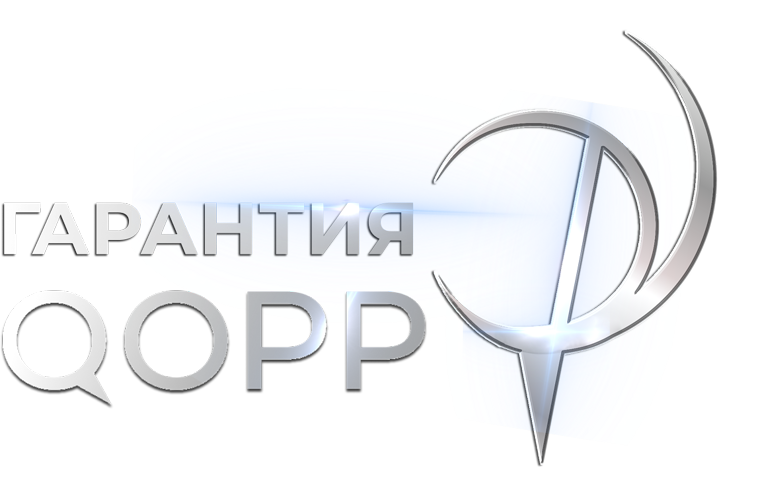
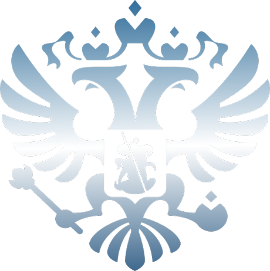
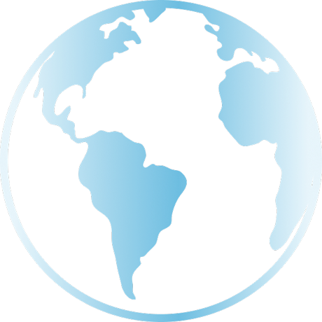

Гарантия
Гарантируем качество и надёжность всем, кто выбирает наши продукты

Копирование с накопителя на максимальной скорости чтения. В жизни время зависит от второго накопителя и самих файлов.
Почему QOPP
Гарантируем качество и надёжность всем, кто выбирает наши продукты

Контроль качества на всех этапах производства

Проверенные комплектующие ведущих производителей
